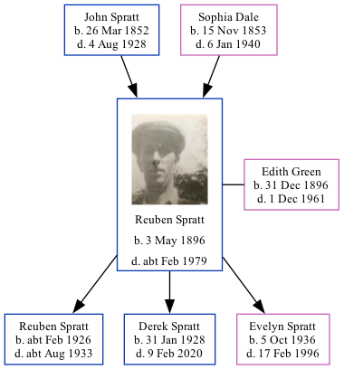

Reuben Spratt 1896 - c1979
[ Home ] | [ Calendar ] | [ Surnames Index ] | [ Family History ]The son of John Spratt and Sophia DaleReuben Spratt, the great-uncle of Nigel Horne, was born in St Nicholas-at-Wade, Kent, England on May 3, 18961,2,3,4,5,6 and married Edith Green (with whom he had 3 children: Reuben A, Derek John and Evelyn Maud) in Thanet, Kent, England around Nov 19247. Like his father, he was an agricultural laborer.
Reuben spent all of his life in Kent, England. Throughout his life, he lived in several places around the county: at 2 Nash Court Cottage, Nash Road, Margate on Mar 31, 19011 and on Apr 2, 191110; at Nash in Thanet on Jun 19, 19213; at 2 Alma Place, Margate in 19358 and on Sep 29, 193911; and at 4 Alma Road, Margate in 19619. Reuben In 1921 he was working at Joseph Gunson Farmer.He served in the army (private 201124 East Kent Regiment).
He died c. Feb 1979 in Thanet4,5.
Parents
- John was born on Mar 26, 1852
- Sophia was born on Nov 15, 1853
Children
- Reuben A was born c. Feb 1926
- Derek John was born on Jan 31, 1928
- Evelyn Maud was born on Oct 5, 1936
Citations
- 1901 England Census Online publication - Provo, UT, USA: The Generations Network, Inc., 2005.Original data - Census Returns of England and Wales, 1901. Kew, Surrey, England: The National Archives of the UK (TNA): Public Record Office (PRO), 1901. Data imaged from the National
- 1911 England Census Online publication - Provo, UT, USA: Ancestry.com Operations, Inc., 2011.Original data - Census Returns of England and Wales, 1911. Kew, Surrey, England: The National Archives of the UK (TNA), 1911. Data imaged from the National Archives, London, England.
- 1921 Census Of England & Wales - Findmypast (was age 25 and the son of the head of the household)
- England & Wales deaths 1837-2007 - Findmypast
- England & Wales, Death Index: 1984-2005 Online publication - Provo, UT, USA: The Generations Network, Inc., 2007.Original data - General Register Office. England and Wales Civil Registration Indexes. London, England: General Register Office. © Crown copyright. Published by permission of the Cont
- England & Wales, FreeBMD Birth Index, 1837-1915 Online publication - Provo, UT, USA: The Generations Network, Inc., 2006.Original data - General Register Office. England and Wales Civil Registration Indexes. London, England: General Register Office. © Crown copyright. Published by permission of the Cont
- England & Wales, Marriage Index: 1916-2005 Online publication - Provo, UT, USA: The Generations Network, Inc., 2009.Original data - General Register Office. England and Wales Civil Registration Indexes. London, England: General Register Office. © Crown copyright. Published by permission of the Cont
- 1935 Kelly's Thanet Directory
- From his wife's probate record
- 1911 Census for England & Wales - Findmypast (was age 15 and the son of the head of the household)
- 1939 Register - Findmypast (was the head of the household)
Media
Reuben Spratt

UK Railway Employment Record

1935 Kelly's Thanet Directory

1935 Kelly's Thanet Directory
England & Wales births 1837-2006 - BMD/B/1896/2/AZ/000551/349
1939 Register Transcription - TNA-R39-1755-1755D-006-38
England & Wales deaths 1837-2007 Transcription - BMD-D-1979-1-AZ-001213-054
1911 England, Wales & Scotland Census Transcription - GBC-1911-RG14-04484-0189-5
Medal Index Cards Transcription - GBM-MCI-4217148
England & Wales marriages 1837-2008 Transcription - BMD-M-1924-4-AZ-001097-105
1921 Census of England & Wales - GBC/1921/RG15/04434/0087/04
Family Tree
Generated by ged2site. Last updated on Nov 13, 2024